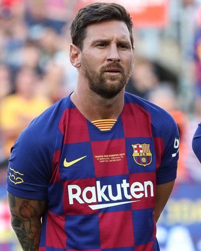

1987년 6월 24일 아르헨티나의 로사리오[13][14]에서 태어났다. 이탈리아인이었던 증조할아버지 안젤로 메시(1866년생)가 1893년 아르헨티나로 이주하면서 집안이 아르헨티나 사람이 되었다. 아버지 호르헤 오라시오 메시는 철강 노동자였고, 어머니 셀리아 마리아 쿠치티니는 파트타임 청소부로 일했다. 아버지가 지역의 클럽인 글란돌리의 코치이기도 했기 때문에 어렸을 때부터 자연스럽게 축구와 가까워졌고 글란돌리의 클럽에 가입해서 축구를 배우기 시작한 시기는 네 살 때라고 한다. 처음으로 축구 경기에 뛰어본 것은 할머니의 권유에 의해서였다고 한다. 지역 유소년 경기를 관람하러 갔다가 우연히 결원인원이 발생하게 되자 이 할머니가 감독에게 대타로 자신의 손자를 써보라고 강권했고 그렇게 투입된 경기에서 메시가 엄청난 활약을 보여주며 그날부터 본격적으로 축구를 시작하게 되었다고.[15]
Messi Image 